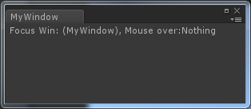

[TOC]
Unity 提供EditorWindow给开发者使得开发者可以创建自定义的编辑器界面，像这样的：

下面来深入了解一下。
示例代码
public class MyWindow : EditorWindow {
[MenuItem("Window/MyWindow")]
static void myWindow() //创建自定义窗口
{
MyWindow window = (MyWindow)EditorWindow.GetWindow(typeof(MyWindow));
window.Show();
}
private void OnGUI() //构建界面
{
string focuseName = focusedWindow == null ? "Nothing" : focusedWindow.ToString();
string overName = mouseOverWindow == null ? "Nothing" : mouseOverWindow.ToString();
GUILayout.Label("Focus Win:" + focuseName + ", Mouse over:" + overName);
}
void OnInspectorUpdate() //实时更新
{
this.Repaint();
}
}
API解析
GetWindow
函数原型：
public static EditorWindow GetWindow(Type t, bool utility = false, string title = null, bool focus = true);
这个函数的作用是返回当前Uinty界面上的第一个类型为t的窗口，如果没有，创建并返回。
参数utility如果为true，那么这个窗口始终是一个浮动窗口，不会和其他窗口组合。
OnGUI()
自定义窗口的UI实现
focusedWindow和mouseOverWindow
这是EditorWindow中的两个自定义变量：
public static EditorWindow mouseOverWindow;
public static EditorWindow focusedWindow;
表示当前Unity界面中，焦点窗口和鼠标Over窗口，可为Null。
OnInspectorUpdate()
这个函数每秒会被调用10次，用来实时更新自定义窗口的信息。
在我们的示例程序中，因为要实时监听鼠标的Over事件和窗口的focus事件，所以需要这个函数。
Repaint
重新绘制窗口
comments powered by Disqus